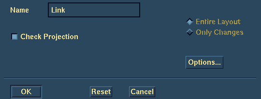
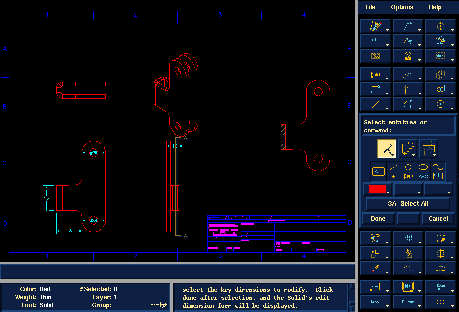

Step 15
(Demonstrator 2)
Return to Table of Contents
Previous Step
Drafting Setup
Process to Drafting Options
Hidden Style
Removed
Export/Plot Centerlines
(off)


Return to Table of Contents
Previous Step